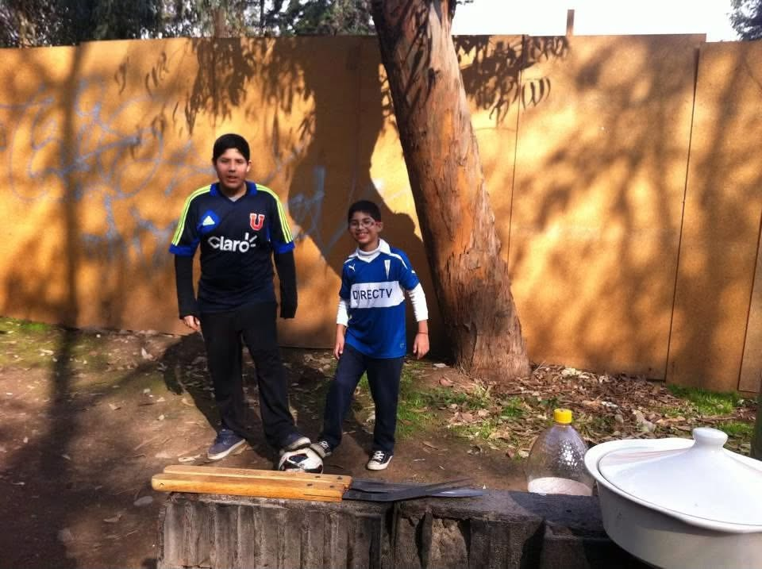
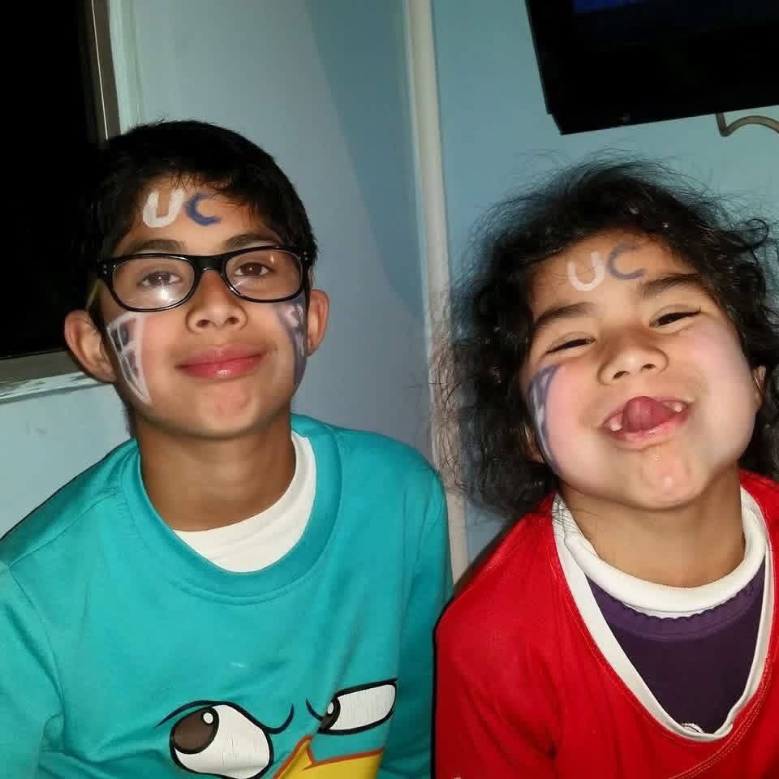
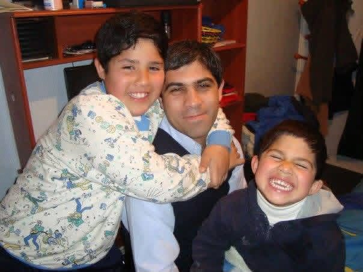
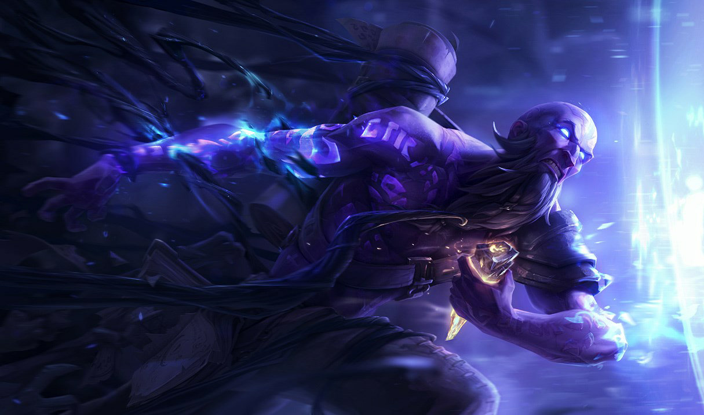
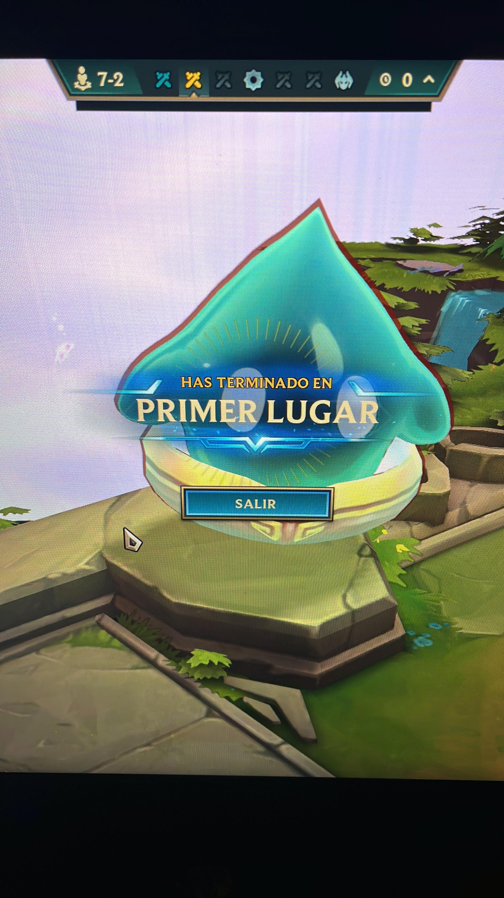
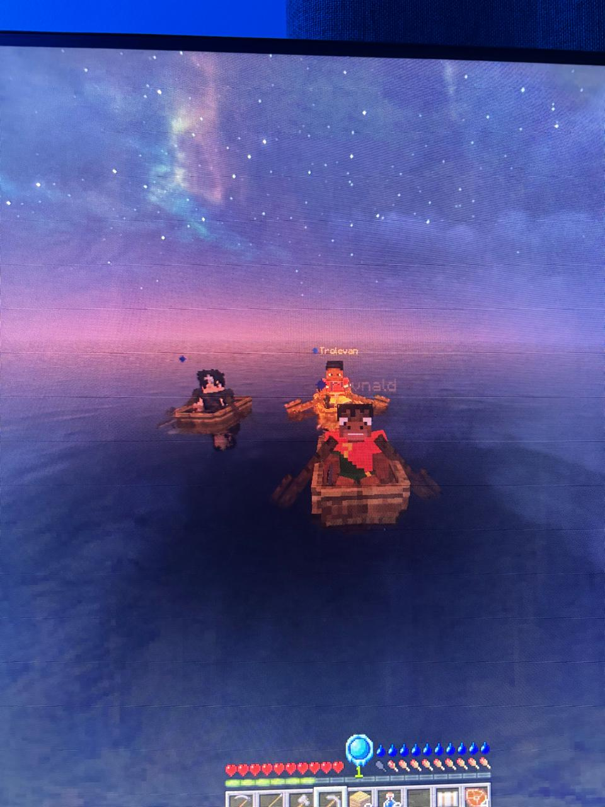

✳Y optimizado por Codex. He analizado la situación y mi primera recomendación es que te rías.
Los creadores.
Hay una sorpresa detrás de estas fotos.
Toca una foto y después la pegatina del sobre para descubrirla.
CAPÍTULO 02
ÁLBUM CRUZADO
UniversidadCatólica
Milovan, desde chico llevas a Universidad Católica en el corazón. Basta mirar la camiseta y las letras pintadas en la cara para volver a esa alegría de niño. Qué lindo que esos colores sigan siendo parte de tu historia.
Una infancia cruzada
01–03 / FOTOS DE INFANCIA

01Con la camiseta desde chico

02Los colores hasta en la cara

03Un abrazo de infancia
CAPÍTULO 03MUCHOS AÑOS EN LA GRIETA
MILOVAN / CARRIL CENTRAL
El terror de la Midlane.
Llevas muchos años en la Grieta. Partidas que se alargaron hasta tarde, remontadas que todavía se recuerdan y dos campeones que ya son parte de tu historia.

01
MAGIA ARCANA
Ryze
Uno de tus mains
Runas, memoria y una última jugada. Hay campeones que, después de tantos años, se sienten como volver a casa.
02
INSTINTO ASESINO
Katarina
Tu otra forma de entrar a la pelea
La daga en el lugar preciso y ese instante en que todo encaja. Años de partidas para reconocer el momento de lanzarse.
MUCHOS AÑOS. LA MISMA PROMESA.
“Ganamos una y nos vamos.”
Cómo olvidar esas noches interminables de “una más, una más”. Si perdíamos, no nos podíamos ir con una derrota. Si ganábamos, siempre cabía otra. Y entre runas, dagas y risas, ya eran las cinco de la mañana.
CAPÍTULO 04 / NUESTRO PACTO
Teamfight Tactics.
Del fondo de la sala a las cuatro de la mañana.
MANO + MILOVANEL PACTO SIGUE VIVO ✦
✦ PREPARACIÓN ✦
Una composición de recuerdos.
Toca a Ryze, Katarina o el cristal para abrir un recuerdo del tablero.
M
Mano 🤝Una conversación de tantas
Mano, vamos para el fondo para jugar sus TFT.
Sale su TFT rápido en el celu 🤫
Hermano son las 4 AM...
¿Ganamos una más y nos vamos? Si saco el Mega Mecha, esta la ganamos 🙏
DESLIZA. EL PACTO SIGUE VIVO. ↓
01
EL COMIENZO
3 Seasons de Tryhardeo
Todo empezó en la época de las frutas. Lo que partió como una partida casual para probar, se terminó convirtiendo en nuestra rutina sagrada.
02
LA MEJOR COMPOSICIÓN
El ramo era lo de menos
En la universidad, la verdadera estrategia era sentarnos al fondo y lograr que la profe no nos pillara jugando. Pero nos retaba, nos pedía explicar lo que acababa de decir y nos mirábamos sin saber nada: por estar pendientes del TFT, no habíamos puesto atención. Qué manera de reírnos después.
03
DIAMANTE: LO CONSEGUIMOS
El Infierno por los LP
Lo que sudamos y rezamos para subir. Empezamos en la época de las frutas y en la season siguiente ya habíamos llegado a Diamante. Entre las clases, las risas y las noches de “una más”, ese logro también quedó como un recuerdo de los dos. Esta season hemos jugado menos, pero el pacto sigue vivo.
VICTORIA
GRACIAS POR CARREARNOS.
De parte de Hanyer, Ronald y Alessandro. Una sorpresa para el mejor.
La carrera aún no termina... sigue bajando↓
CAPÍTULO 05 / COLECCIÓN PERSONAL
El Garaje de Recuerdos.
Algunas piezas no se coleccionan por su valor. Se guardan por todo lo que te hacen recordar.
Explora las cinco miniaturas.
VITRINA 0101–03 / ESCALA 1:24
MOTORMAX1:24 SERIES
DIE-CAST COLLECTION

¿Recuerdas nuestras primeras partidas de TFT? Así empezaron esas horas interminables de juego.
MOTORMAX1:24 SERIES
DIE-CAST COLLECTION
¿Recuerdas las primeras veces que salíamos fuera de la universidad? Todavía me acuerdo de que casi maté al Javer, jajaja.
MOTORMAX1:24 SERIES
DIE-CAST COLLECTION

¿Recuerdas a los tres mosqueteros? En esa aventura, hasta el aire era peligroso…
VITRINA 0204–05 / ESCALA 1:24
MOTORMAX1:24 SERIES
DIE-CAST COLLECTION
¿Recuerdas esa vez que no conocías a nadie y aun así lo diste todo?
MOTORMAX1:24 SERIES
DIE-CAST COLLECTION
¿Recuerdas esa vez que no conocías a nadie, pero igual te animaste a ir, aunque al final te tuviste que devolver?
PARA TI, MILOVAN
Gracias por todo, hermano.
Hicimos este universo con amor y dedicación, solo para ti. Queríamos guardar juntos esos momentos que todavía nos hacen reír cuando los recordamos.
Para mí eres un hermano, y para nuestros amigos también eres alguien muy importante. Nunca olvides que siempre vas a poder contar con nosotros.
Gracias por estar, por las risas y por todos los momentos que hemos compartido. Por favor, nunca cambies.
Te queremos, hermano.
Hermano, una palabra complicada y a la vez fácil de decir pero pocas veces que de verdad se sienten real, y de eso te quiero hablar, sin darme cuenta creé una conexión la cual es grande y nunca la creí tener por alguien que la verdad conozco hace poco ya que antes de ti mi hermano o mejor amigo es alguien el cual conozco hace 20 años, literal de que nací, pero no creí que en tan poco tiempo podría volver a decirlo y sentirlo, ya que hemos pasado tantas cosas, siendo que al principio tu humor me hizo que me cayeras mal pero con el tiempo quedamos solo los dos para todos lados, a donde estuvieras estaba, a donde estuviera tú estabas y lo agradezco y por eso mismo quiero darte estas palabras sé que entre hombres no es común decir esto pero nunca está mal recordarlo, eres alguien en cual pienso y me río y me hace decir no importa que wea estemos haciendo pero si es contigo se siente bacan y me cagare de risa, a veces no es ni necesario decir una palabra, el silencio no es incómodo y tener eso no es fácil, con gente que conozco hace años aún se siente así, pero contigo no,
Se hermano que no estás en tu mejor momento y que mentalmente estás teniendo tus batallas internas, sabes que cualquier cosa siempre estaré, aunque no quieras hablar del tema, estaré para lo que necesites y gracias por tu estar para mí cuando lo necesite ya que muchas noches fueron las cuales me diste consejos cuando tenía el tema de mi padre el cual por suerte se arregló, pero ahí estabas tú escuchándome siendo que soy alguien que habla demasiado, a veces ni palabras dices pero yo ya tengo una historia nueva para contar y gracias hermano por estar y por eso mismo.
Te quiero hermano
- Hanyer Alegría
Claro, aquí tienes una mini carta para tu mejor amigo. 😊
La amistad es uno de los regalos más maravillosos que nos brinda la vida. A lo largo de nuestro camino, conocemos personas que dejan huellas imborrables en nuestros corazones, iluminando nuestros días con alegría, risas y momentos inolvidables. Hoy quiero dedicarte estas palabras que nacen desde lo más profundo de mi corazón, porque una amistad tan especial como la nuestra merece ser celebrada. ❤️✨
Naaaaa mentira, te fuiste troleado amigo.
Antes de ponerme en modo Gabriela Mistral: «Dame la mano y danzaremos; dame la mano y me amarás». Tampoco te tomes literal eso de «dame la mano y me amarás» que weko de mi parte jaajssjsja, solo fue para entrar en el modo poeta.
Lo primero que quiero decir es que no soy muy bueno escribiendo cartas ni expresándome, pero lo voy a intentar. Para todo hay una primera vez 👉🏼👈🏼.
Y lo segundo es que esta mini carta es un 5% de seriedad y un 95% de yo escribiendo puras weás, porque el Hanyer me leyó la carta que te hizo y casi me pongo a llorar. Y como sé la forma en que está distribuida la página, sé que leerás la del Hanyer primero, después la de tu hermano y al último la mía, así que esta carta es como para cambiar el mood (si leíste la mía primero, me arruinaste el predict que me había tirado jakdskssksks).
Querido Milovan, alias Milo, Erlin Jalan, Trolevan, Tionesquiq, Wenamiking, Ttttocho, el terror de la midlane:
Ya han pasado casi 3 años desde que nos conocemos, y pensar que el primer día que llegaste al grupo y te sentaste con nosotros a comer ni siquiera una palabra nos dijimos. Y ahora eres uno de los amigos con los que más paso tiempo, hablando de cualquier cosa que salga en el momento y también jugando hasta tarde, aunque a mí me reten por pasarme de las 1:30 jijijiiiji.
Tampoco hay que olvidar a nuestro compañero ciego y sordo, que ojalá nos presente a su hermana algún día jadjssjssjs.
Ya fuera de todas las bromas, quería decirte que me alegra mucho haberte conocido y que hayamos terminado siendo amigos. Valoro mucho tu amistad y espero que sigamos compartiendo buenos momentos. Y espero que me sigas carreando en la grieta del fornicador por mucho tiempo más, si no es mucha molestia.
Y quiero que sepas que puedes contar conmigo para lo que necesites. No soy el mejor opinando ni dando consejos, pero puedo estar ahí escuchando y acompañándote.
Te quiero caleta, hrmn.
PD1: Mientras escribía esto parecía autista caminando de un lado hacia otro jsdkddsjsk, que caminando es cuando me pongo más creativo.
PD2: Hay que convencer al Hanyer para que nos pasemos maincra hardcore.
Feliz cumpleaños, hermanito mío. ❤️
No sé ni por dónde empezar, porque siento que hay tantas cosas que quisiera decirte que a veces las palabras se quedan cortas. Hoy quiero aprovechar tu cumpleaños para recordarte lo importante que eres para mí y lo agradecido que estoy de tenerte en mi vida.
Si miro hacia atrás y veo todas esas fotos, me doy cuenta de cuánto hemos crecido, de todas las etapas que hemos vivido, de las risas, las tonteras, los momentos buenos y también los difíciles. Hemos pasado de ser esos niños que jugaban a las luchas a ir construyendo nuestras propias vidas, pero hay algo que espero que nunca cambie: que siempre podamos contar el uno con el otro.
Quiero darte las gracias por ser como eres, por tu forma de enfrentar la vida, por tu corazón y, especialmente, por ser una persona tan valiente. Admiro muchísimo la fortaleza que tienes, la manera en que sigues adelante y cómo, a pesar de las dificultades que puedan aparecer, encuentras la forma de continuar. Quizás no te lo digo tan seguido como debería, pero estoy muy orgulloso de ti, nunca dudes de lo mucho que vales ni de todo lo que eres capaz de conseguir.
También quiero pedirte perdón si alguna vez no he sido el hermano que mereces, si he cometido errores, si te he fallado, si he dicho algo que te haya hecho sentir mal o si en algún momento no he sabido demostrarte cuánto te quiero. Créeme que jamás ha sido mi intención. Sé que no soy perfecto y que muchas veces puedo equivocarme, pero nunca quisiera que mis errores te hicieran dudar del cariño inmenso que te tengo. Siempre voy a querer lo mejor para ti y quiero que tengas algo muy claro: eres una de las personas más importantes de mi vida. Y cuando digo eso, lo digo de verdad, para mí no eres solamente mi hermano, eres mi compañero de vida, mi cómplice en tantas historias y, por sobre todas las cosas, mi mejor amigo. Eres de esas personas que quiero tener siempre cerca, con quien quiero seguir compartiendo momentos, celebrando logros, superando dificultades y creando recuerdos que algún día podamos mirar y recordar con una sonrisa.
No importa cuántos años pasen, cuánto cambiemos o qué caminos nos toque recorrer. Quiero que sepas que siempre vas a tener un hermano que te quiere, que te admira, que cree en ti y que va a estar orgulloso de verte crecer y cumplir tus sueños.
Ojalá la vida te devuelva multiplicado todo lo bueno que tienes para entregar. Que nunca te falten motivos para sonreír, personas que te quieran de verdad, sueños por cumplir y fuerzas para enfrentar cualquier desafío. Te mereces cosas maravillosas y espero poder estar ahí para ver cómo las vas consiguiendo.
Gracias por existir, por ser mi hermano y por regalarme tantos recuerdos que guardo con muchísimo cariño. Si pudiera elegir nuevamente a alguien para compartir esta vida como hermano, te volvería a elegir a ti, una y mil veces.
Feliz cumpleaños, hermano. Te amo muchísimo. Y nunca olvides que, antes que cualquier otra cosa, más que mi hermano eres mi mejor amigo, y eso no va a cambiar jamás. ❤️